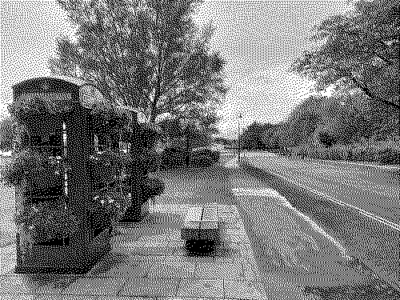
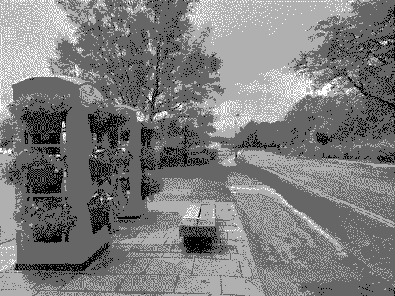
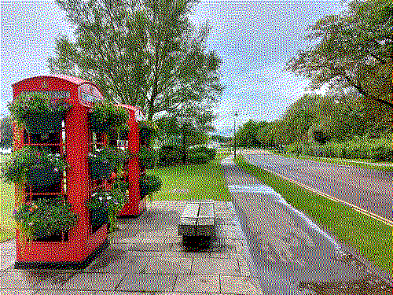
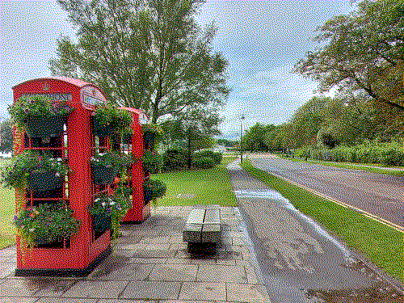
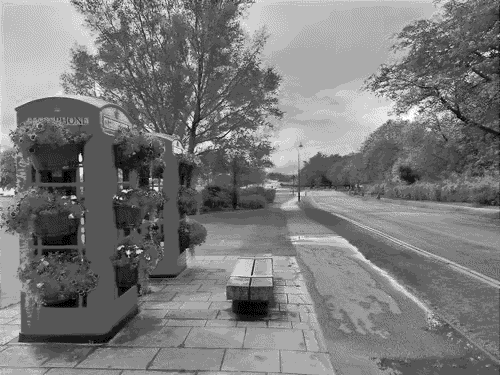
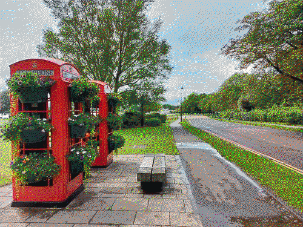
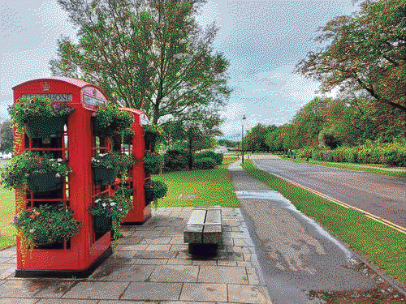

Data Representation
Images
All data on a computer is represented as binary digits, and images are no exception.
This pages looks at concepts such as Image size, Resolution, Colour Depth, and Metadata providing some real-life examples of how these affect the images that you see on a computer screen.
Image size
Images stored on a computer, smart phone or tablet are made up of pixels. Each pixel is represented by a binary number. Image size is simply the number of pixels that an image contains and is simply expressed as height and width.
100 x 75 pixels
3.0 kB bytes
500 x 375 pixels
49.8 kB bytes
1000 x 750 pixels
207.9 kB bytes
1500 x 1125 pixels
481.1 kB bytes
Resolution
Image quality is affected by the resolution of the image. The resolution of an image is a way of describing how tightly packed the pixels are.
Colour Depth
Many images need to use colours. To add colour, more bits are required to represent each colour for each pixel. The number of bits determines the range of colours and this is known as colour depth.

1-bit, 2 colour pallette.
25.7 kB bytes |

2-bit, 4 colour palette (greyscale).
27.6 kB bytes |

3-bit, 8 colour palette.
63.4 kB bytes |

4-bit, 16 colour palette.
69.2 kB bytes |

4-bit, 16 palette (greyscale).
56.1 kB bytes |

5-bit, 32 colour palette.
69.2 kB bytes |

6-bit, 64 colour palette.
78.9 kB bytes |

24-bit, 16.7 million colour palette.
49.8 kB bytes |
Metadata
Metadata is data about data. Many files contain extra data, and in many cases, the images taken with digital cameras and/or smartphones contain rich information as well as the visible pixels.
This image metadata is stored in EXIF (Exchangeable image file format) and here we have use a Python library called exif to extract the data such as:
- camera model
- date taken
- height and width
- resolution
The information below has been extracted from the original photo poole-park.jpg:
| ImageWidth | 4624 |
| ImageLength | 3468 |
| GPSInfo | 692 |
| ResolutionUnit | 2 |
| ExifOffset | 238 |
| Make | samsung |
| Model | SM-A715F |
| Software | A715FXXS4BUC1 |
| Orientation | 1 |
| DateTime | 2021:07:12 13:03:18 |
| YCbCrPositioning | 1 |
| XResolution | 72.0 |
| YResolution | 72.0 |
This page was created automatically using the following Python script.